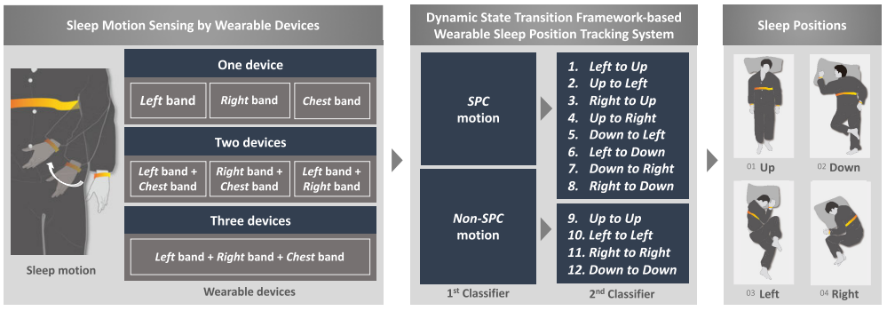
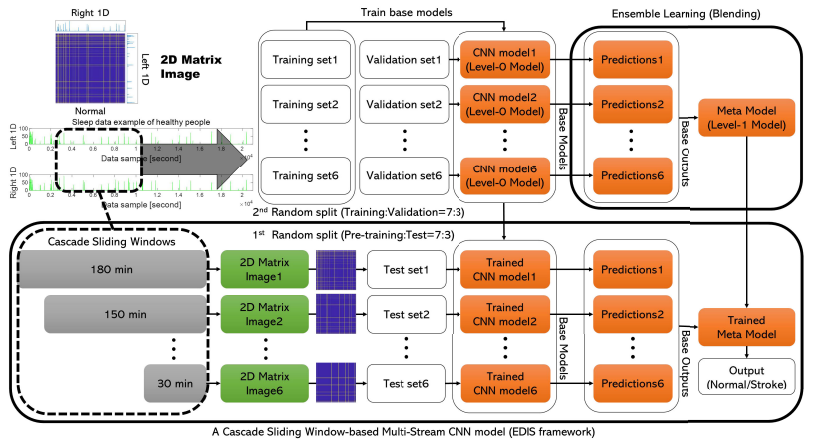
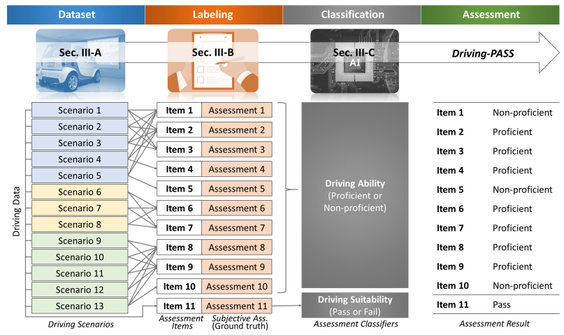
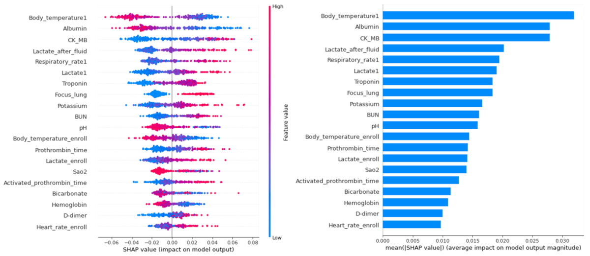
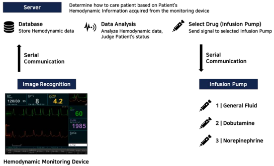
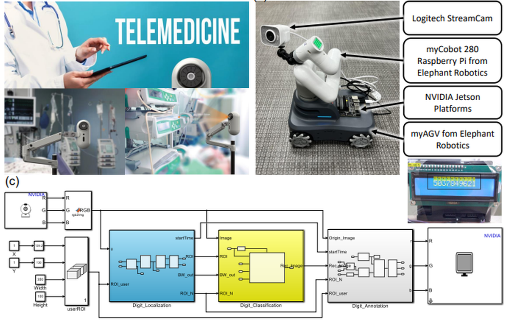

Smart sensing & activity recognition

Sleep Position Tracking
Sleep is crucial for physical and mental recovery, and sleep positions significantly affect sleep quality. We propose a wearable system with two wristbands and a chest-band that tracks sleep positions, using a two-level classifier within a Dynamic State Transition framework to classify twelve motions across four sleep positions.
S. Jeon, T. Park, A. Paul, Y.-S. Lee and S. H. Son. IEEE Access, vol. 7, pp. 135742–135756, 2019. DOI

In-sleep Stroke Early Detection
A wearable system that detects strokes during sleep by analyzing asymmetrical motion with two wristbands. The EDIS framework leverages deep learning and CNNs for efficient, accurate detection, aiming to expedite detection and reduce time to treatment.
S. Jeon, Y.-S. Lee and S. H. Son. IEEE Access, vol. 11, pp. 84944–84956, 2023. DOI
Predictive analytics & patient monitoring

Driving Performance Assessment
Driving-PASS uses driving simulators for safer and more informative assessment of stroke survivors who wish to drive again. Built from twenty-seven participants across thirteen scenarios and expert assessments over eleven driving factors, it employs eleven classifiers with sophisticated feature extraction and data balancing.
S. Jeon, J. Son, M. Park, B. S. Ko and S. H. Son. IEEE Access, vol. 9, pp. 21627–21641, 2021. DOI

Predicting Mortality in Septic Shock
A balanced random forest model predicts 28-day mortality for stage 4 cancer patients with septic shock, achieving an AUC of 0.821 in training and 0.859 in testing across 897 patients — significantly surpassing traditional scoring systems.
B. S. Ko, S. Jeon, D. Son, et al. Journal of Clinical Medicine, 11(23), 7231, 2022. DOI
Timeliness, reliability, safety, security

Automatic Shock Treatment
An IoT-based framework that continuously monitors vital hemodynamic data, automatically detects shock states, and administers necessary medication, while allowing clinicians to track patient progress through a web application.
N. Lee, Y. Kim, M. Jeong, J. Shin, I. Joe, S. Jeon and B. S. Ko. KSII TIIS, vol. 16, no. 7, pp. 2209–2224, 2022. DOI

Remote Monitoring with a Mobile Robot (ROMI)
ROMI enables non-contact monitoring of ICU patients using real-time optical digit recognition to read medical device screens. Built with MATLAB Simulink on NVIDIA Jetson hardware, it showed high accuracy across ten pre-trained CNN models.
S. Jeon, B. S. Ko and S. H. Son. Sensors, 23(2), 638, 2023. DOI
Basic Research for CPS
Model-based and data-based approaches for the timeliness, reliability, safety, and security of cyber-physical systems.